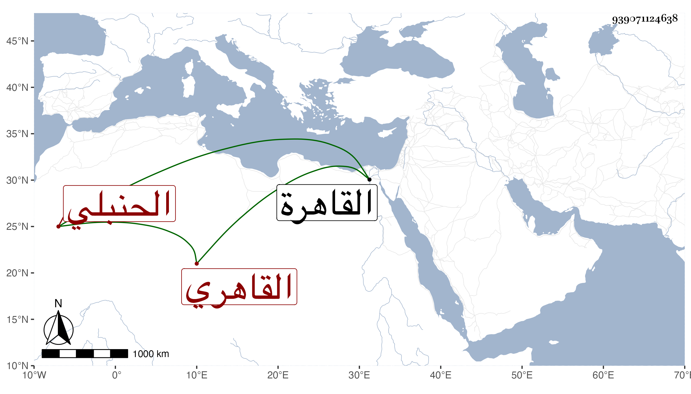

0902Sakhawi.DawLamic.ITO20230111-ara1.EIS1600.939071124638
Biography ID: 939071124638
640
أحمد بن موسى بن إبراهيم بن طرخان الشهاب بن الضياء القاهري الحنبلي والد محمد وأحمد المذكورين ويعرف بابن الضياء . كان بعث قاضي مذهبه القاضي ناصر الدين نصر الله واتفق كما حكاه العز حفيد القاضي أنه قبض له من معاليمه قدرا له وقع ثم جاءه وأبرز طرف كمه وهو مطروز وقال أن السارق قطعه وأخذ المبلغ . ومات في صفر سنه ثلاث . أرخه شيخنا . قال وهو والد صاحبنا الشمس بن الضياء الشاهد بباب البحر ظاهر القاهرة .
